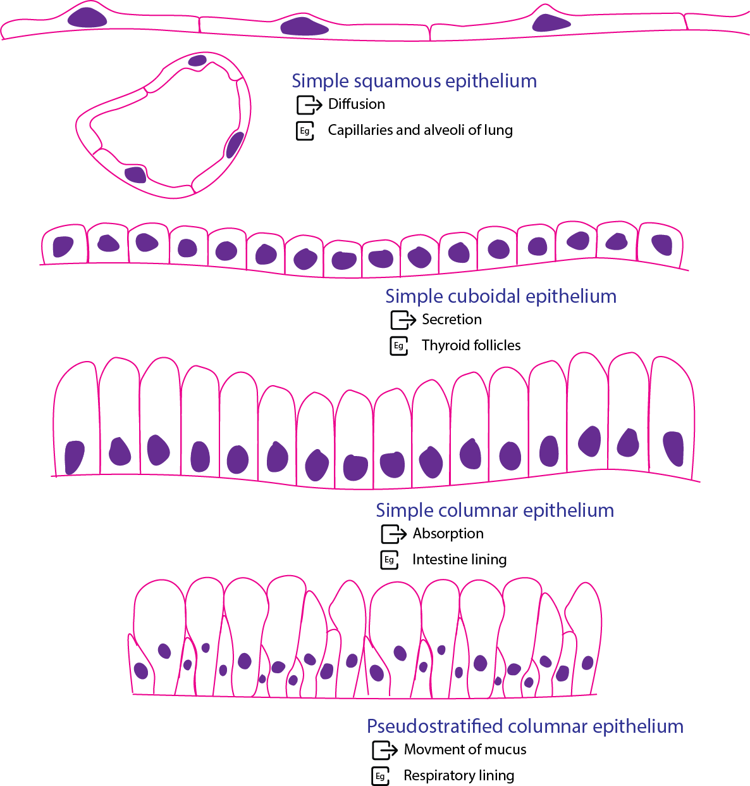
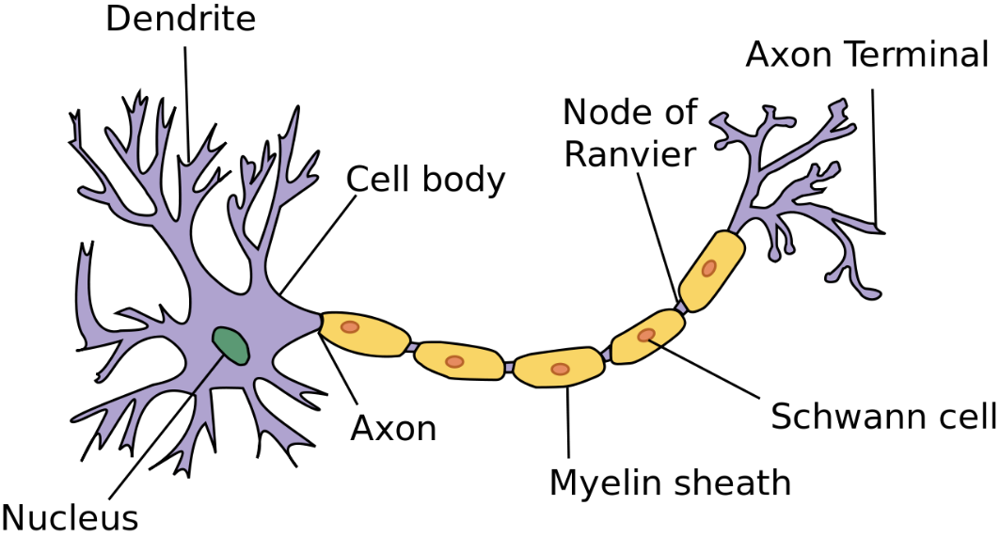

Basic Tissues
A tissue is an organised group of cells and their surrounding material that work together to perform one or more functions. An organ combines several tissues. The small intestine, for example, uses epithelium to absorb nutrients, connective tissue to support its lining, smooth muscle to move its contents, and nervous tissue to coordinate that movement.
The body has four basic tissue types. The microscopic study of tissues is called histology, from the Greek histos, meaning “web” or “woven fabric,” and -logia, meaning “study.”
Tissue type | How to recognise it | Main function | Example |
Epithelial | Closely packed covering cells arranged in a sheet | Covers surfaces, lines cavities, absorbs or secretes substances | Intestinal lining |
Connective | Cells embedded in an extracellular matrix that varies with the tissue | Supports, binds, protects or transports | Tendon, cartilage, bone, blood |
Muscle | Cells specialised to contract | Generates force and movement | Skeletal muscle, heart muscle, intestinal wall |
Nervous | Neurons with processes, together with supporting glial cells | Receives, processes and transmits information | Brain, spinal cord, peripheral nerves |
Epithelial tissue
Epithelium covers the body surface, lines internal spaces and passageways, and forms the secretory portions of many glands.
- Epithelial cells fit closely together, with little material between them.
- Epithelial cells show polarity. Their apical surface faces a free surface or a lumen, while their basal surface attaches to a thin supporting layer called the basement membrane. The Latin apex means “tip,” and basis means “base.”
- Epithelium is generally avascular, so nutrients reach its cells by diffusion, commonly from vessels in the underlying connective tissue.
Name an epithelium by its number of layers.
- Simple means one layer and stratified means several layers.
- In a stratified epithelium, the shape of the surface cells determines the name.
Classification of epithelium by cell shape
- Squamous cells are flat like scales, from Latin squama, meaning “scale.”
- Cuboidal cells are roughly cube-shaped
- Columnar cells are taller than they are wide.
Example | Structure and function |
Simple squamous epithelium in lung alveoli | A thin layer of flat cells provides a short diffusion path for gases. |
Simple cuboidal epithelium in many kidney tubules | A single layer of cube-shaped cells supports absorption and secretion. |
Simple columnar epithelium in the small intestine | Tall cells form an absorptive lining. Microvilli increase its surface area. |
Keratinised stratified squamous epithelium in the epidermis | Multiple layers and a keratinised surface protect against abrasion and limit water loss. |

Figure: Simple squamous epithelium
Connective tissue
Connective tissue binds and supports other tissues. Its cells lie within an extracellular matrix, the material outside the cells.
In most connective tissues, this matrix contains fibres and ground substance, the material that fills the space around the cells and fibres.
Fibroblasts produce much of the matrix in connective tissue proper.
The composition and arrangement of the matrix explain why connective tissues behave differently:
- Loose connective tissue supports epithelia and surrounds small vessels and nerves.
- Dense connective tissue contains abundant collagen. In a tendon, the collagen bundles run mainly in the direction of pull, helping it resist tension.
- Cartilage and bone are supporting connective tissues. Cartilage has a firm, hydrated matrix that can resist compression. Bone has a mineralised matrix that provides rigidity.
- Adipose tissue stores energy and cushions structures. Blood is a fluid connective tissue whose cells are suspended in plasma.
Collagen fibres resist tension, while elastic fibres allow tissues to stretch and recoil.
Muscle tissue
Muscle tissue generates force by contraction.
- Skeletal muscle moves the skeleton and helps maintain posture.
- Cardiac muscle contracts to pump blood. Both are striated, meaning they show a banded appearance under the microscope.
- Smooth muscle lacks visible striations and is found in structures such as the intestinal wall and blood vessels.
Nervous tissue
Nervous tissue contains neurons and glial cells.
- Neurons receive, process and transmit signals.
- Glial cells help maintain the environment in which neurons work. The word glia comes from the Greek word for “glue.”
- Some form myelin, which helps signals travel rapidly along axons.

Figure: multipolar neuron
Key points to remember
- Epithelium forms a cellular boundary.
- Connective tissue derives much of its mechanical behaviour from its matrix.
- Muscle generates force, and nervous tissue transmits impulses.
- Healing can restore different layers in different ways. A surface may regain its epithelium while the deeper tissue heals by scarring.
Key Diagnostic IHC & Cellular Markers for Primary Human Tissue Types
In surgical pathology and histology, differentiating undifferentiated tumors or identifying embryological origins relies on tracking lineage-specific proteins, structural filaments, and receptor classes using Immunohistochemistry (IHC).
Primary Tissue Type | Specialized Subtype | Key Cellular / Molecular Markers | Clinical & Diagnostic Signification |
EPITHELIAL TISSUE | General Epithelium | Pan-Cytokeratin (pan-CK) (e.g., AE1/AE3), E-cadherin, Epithelial Membrane Antigen (EMA) | Confirms epithelial origin; essential to diagnose Carcinomas (cancers of epithelial cells). |
Glandular / Simple | Cytokeratin 7 (CK7), CK20, E-cadherin, CAM5.2 | Key "CK7/CK20" panel used to determine the primary site of metastatic adenocarcinomas (e.g., CK7−/CK20+ is highly specific for colorectal origin). | |
Squamous / Basal | Cytokeratin 5/6 (CK5/6), p63, p40, High-Molecular-Weight Cytokeratin (34βE12) | Confirms squamous cell differentiation (e.g., lung or cervical squamous cell carcinoma). p40 is more specific than p63 for squamous lineage. | |
Mesothelial Lineage | Calretinin, Wilms Tumor 1 (WT1), D2-40 (Podoplanin), Cytokeratin 5/6 | Distinguishes Mesothelioma (cancer of the pleural/peritoneal lining) from metastatic adenocarcinoma. | |
CONNECTIVE TISSUE (Mesenchymal) | General Mesenchyme | Vimentin (universal mesenchymal intermediate filament) | Confirms mesenchymal/connective tissue origin. Expressed in Sarcomas (cancers of connective tissue) and cells undergoing EMT. |
Fibrous / Fibroblastic | Vimentin, CD34 (in some stromal networks), Fibronectin | Marks fibroblasts, fibrocytes, and related spindle-cell tumors. | |
Adipose (Fat) | S100 (diffuse), MDM2 (amplified in liposarcomas), Perilipin, Calretinin (weak) | Identifies adipocytes; MDM2 amplification differentiates atypical lipomatous tumors/liposarcomas from benign lipomas. | |
Cartilage & Bone | S100 (chondrocytes), SOX9 (master chondrocyte transcription factor), SATB2 (osteoblasts), Osteocalcin | SATB2 is a highly sensitive and specific nuclear marker for osteogenic differentiation (confirms osteosarcoma). | |
Endothelial (Vessels) | CD31 (PECAM-1), CD34, ERG (ETS-related gene, nuclear), Factor VIII-Related Antigen (vWF) | Confirms vascular or lymphatic origin. Essential to diagnose Angiosarcomas and Kaposi's sarcoma. ERG is highly specific. | |
Lymphatic Endothelium | D2-40 (Podoplanin), PROX1 | Distinguishes lymphatic channels from blood vessels (useful in tracking lymphatic invasion by tumors). | |
Melanocytic | S100 (highly sensitive), SOX10 (extremely lineage-specific), Melan-A (MART-1), HMB45 | Identifies melanocytes and diagnoses Melanoma. SOX10 and S100 are nuclear/cytoplasmic markers used to map obscure metastases. | |
Hematopoietic & Immune | CD45 (LCA - Leukocyte Common Antigen), CD3 (T-cells), CD20 (B-cells), CD68 & CD163 (histiocytes/macrophages) | CD45 positivity confirms a hematolymphoid origin (e.g., Lymphoma/Leukemia) over carcinoma or sarcoma. CD3/CD20 are standard classification markers. | |
MUSCLE TISSUE | General Muscle | Desmin (muscle-specific intermediate filament) | Confirms myogenic lineage. Positivity establishes smooth, skeletal, or cardiac differentiation. |
Skeletal Muscle | Myogenin, MyoD1 (both nuclear master regulators), Desmin, Myoglobin, Fast/Slow Skeletal Troponins | Nuclear Myogenin/MyoD1 is the gold-standard diagnostic marker for Rhabdomyosarcoma (pediatric small round blue cell tumor). | |
Smooth Muscle | Smooth Muscle Actin (SMA), Calponin, h-Caldesmon, Smooth Muscle Myosin Heavy Chain (SMMHC) | Diagnoses smooth muscle tumors (leiomyomas and leiomyosarcomas). h-Caldesmon and SMMHC are the most specific for true smooth muscle. | |
Cardiac Muscle | Cardiac Troponin I (cTnI), Cardiac Troponin T (cTnT), Nkx2-5 (nuclear), GATA4 | Specific to myocardium; cTnI/cTnT are released into blood during myocardial infarction (used as serum biomarkers). Nkx2-5 is a lineage master. | |
NERVOUS TISSUE | Central (Neurons) | Synaptophysin (synaptic vesicles), Chromogranin A (neurosecretory), NSE (Neuron-Specific Enolase), NeuN (mature nuclei), Neurofilament (NF) | Positivity confirms neuroendocrine or neuronal lineage. NeuN is highly specific for mature post-mitotic neurons. |
Glial Cells (Astrocytes) | GFAP (Glial Fibrillary Acidic Protein) | Confirms glial origin; the hallmark marker to diagnose Astrocytomas and Glioblastomas. | |
Schwann Cells (PNS) | S100, SOX10 | Essential for PNS myelinating cells. Diagnostic for Schwannomas and Neurofibromas. |
Epithelial-Mesenchymal Transition (EMT) and tissue plasticity
Anatomy has traditionally viewed epithelial and connective (mesenchymal) tissues as distinct, fixed categories. However, modern cellular anatomy recognizes phenotypic plasticity through the process of Epithelial-Mesenchymal Transition (EMT).
During EMT, cohesive, polarized epithelial cells dismantle their intercellular junctions, lose their connection to the basement membrane, reorganize their cytoskeleton, and migrate as solitary, spindle-shaped mesenchymal cells.
The Three Types of EMT in Anatomy and Medicine:
- Type 1 (Developmental):
- Essential for embryogenesis and morphogenesis.
- Without Type 1 EMT, the early embryo could not form the three germ layers (ectoderm, mesoderm, and endoderm) during gastrulation.
- It is also responsible for the migration of neural crest cells and the formation of the heart valves.
- Type 2 (Regenerative and Fibrotic):
- Involved in tissue repair and organ remodeling.
- Following injury, epithelial cells at the wound edge can undergo EMT to become mobile, migrating into the wound to generate the extracellular matrix needed for healing.
- If this process becomes chronic, it results in organ fibrosis (e.g., in the kidneys or liver).
- Type 3 (Oncogenic / Pathological):
- Occurs when neoplastic epithelial cells (carcinomas) hijack this developmental program to gain the invasive and migratory traits necessary to intravasate into blood vessels, resulting in metastasis to distant organs.